الضوء الأزرق بعد الغروب (المرجع الأساسي)
نأخذ: هذا الضوء الهادئ، والمرأة كاملة في الصورة، وصورة تشبه تصوير الجوال. · نترك: المنحدرات الصخرية الداكنة، فليست من مشهد جدة.

Las Olas / CREATIVE DIRECTIONقرأنا متجركم، وحساباتكم في تيك توك وإنستغرام وسناب شات، وحسابات المتاجر المشابهة لمتجركم. ونظرنا في مواسم الأشهر القادمة في جدة. ثم فتحنا في Pinterest مراجع بصرية، كل صورة على صفحتها، واخترنا لكل اتجاه إبداعي ما يناسبه. لم تصلنا منكم مراجع بعد، فهذه المراجع من اختيارنا، وما ترسلونه لاحقًا يتقدم عليها.
كلمات العلامة موجودة قبلنا. كتبتم في حساباتكم أن الصيف «ليس مجرد فصل… بل إحساس». وفي متجركم «صُمم ليُشعر .. لا ليُشرح». وفي فيديو التغليف «نجهز طلباتكم بكل حب، وعلى روقان». على هذه الجمل بُنيت أفكار القصة، وعليها بُنيت الاتجاهات.
القماش لا يظهر. يصف متجركم قطعه بأنها «قطن طبيعي ١٠٠٪»، لكن صوركم لا تُري القماش نفسه. أغلب التصوير في الاستوديو أمام خلفية واحدة، والبحر الذي يعد به الاسم والموجة لا يظهر في صور القطع.
ولا أحد يعرضه. لم نجد في المتاجر المشابهة لمتجركم من يعرض القماش أمام الكاميرا. وأغلبها يبيع بالتخفيض أو باستعجال العميلة.
شتاء جدة دافئ. من نوفمبر تمتلئ الحسابات بملابس الشتاء، وجدة ما زالت دافئة، ومساؤها أجمل أوقات الخروج. أما حساباتكم فتوقفت عن النشر مع نهاية الصيف.
وما يبقى كما هو: الموجة، واسم Las Olas، واللون الكريمي وألوان الموجة، وأسماء مجموعاتكم. لا نغير شيئًا منها.
الاتجاه الإبداعي هو شكل العلامة حين تظهر: الضوء، والمسافة من القطعة، والألوان، وأول ما تراه العميلة في الفيديو، وكيف يبدو الحساب كاملًا.
بنى فريقنا الإبداعي اتجاهًا إبداعيًا داخل كل فكرة من أفكار القصة:
لكل اتجاه ضوؤه ومسافته ومراجعه، ولا يشترك اتجاهان في المرجع الأساسي نفسه. تختارون فكرة واحدة ومعها اتجاهها، ويُترك الآخران. ولا نخلط الاتجاهات بعد الاختيار.
ثابت في الاتجاهات كلها: ما تراه العميلة من القطعة نفسها يأتي من تصويرها فعلًا: اللون، والقماش، والقصّة، وطريقة انسدالها. لا نغير لون القطعة ليناسب الصورة. ونعمل في ما حولها بالتصوير وبالأدوات الرقمية معًا، دون أن نمس القطعة نفسها.
قراران ينتظرانكم، ويتأثر بهما كل اتجاه بطريقة مختلفة:
صممنا كل اتجاه على ما نوصي به، ونبين معه ما يتغير إن اخترتم غيره.
داخل فكرة «الصيف إحساس» · العبارة الرئيسية: «قلنا إن الصيف إحساس، وشتاء جدة هو الدليل.»
نصور Las Olas في جدة في الساعة التي يهدأ فيها الحر، في أمسية حقيقية من شهر يسميه التقويم شتاء، فيظهر أن قطع الصيف في موسمها الآن.
القطعة صيفية، وحين يبرد الهواء تُلبس فوقها طبقة خفيفة مفتوحة. والإحساس الذي نريده راحة، لا إجازة. وفي كل حلقة معلومة لا تُزيَّف: تاريخ اليوم، وأعلى حرارة سُجِّلت فيه.
سماء جدة في آخر ضوئها، وعليها تاريخ اليوم وأعلى حرارة سُجِّلت فيه. وقبل أن تنتهي الثانية الأولى تدخل المرأة من طرف الصورة بقطعة من مجموعة صيفية. لا عنوان قبل الصورة، ولا وجه، ولا صوت يسبقها. ما يشد العين هو الفرق بين الشهر المكتوب على الشاشة والضوء في الصورة.
المسافة: المرأة داخل المدينة · الضوء: آخر النهار
من بعيد، بمسافة تكفي لنرى المرأة وهي تمشي. تظهر كاملة أو إلى ما تحت الركبتين، صغيرة في الصورة، والمدينة حولها جزء من الدليل. نراها من الخلف، أو وهي تلتفت بعيدًا عن الكاميرا، فالوجه ليس موضوع الصورة.
الجوال منخفض عند الخصر أو أدنى، بعدسة واسعة، وهي تمشي داخل الصورة وتخرج منها. وأقرب لقطة: يد تشد الطبقة الخفيفة عند الكتف. وفي الأماكن العامة، لا نصور إلا حيث يُسمح بالتصوير.
آخر ساعة من الشمس، ثم الضوء الأزرق الهادئ بعد الغروب، ثم ضوء دافئ من باب أو مصباح أو واجهة محل بعد حلول الظلام. لا تصوير في ساعات الظهيرة.
في الكتابة، اللون الأساسي هو الأزرق المخضر الداكن من ألوان الموجة، في سطر صغير للتاريخ والحرارة. والكريمي أرضية البطاقة المكتوبة حين تظهر، وهي نادرة. أما ألوان السماء والجدران والقطع فتأتي من الكاميرا كما هي.
تبدو صفحة الحساب أمسية بعد أمسية: سماء زرقاء في أعلى كل صورة وضوء دافئ في أسفلها، وامرأة صغيرة في مدينة حقيقية. البطاقات المكتوبة قليلة، والعنوان على الغلاف في المكان نفسه وبالحجم نفسه دائمًا، فتُقرأ الصفحة سلسلة واحدة.
هذه الصور مراجع للمزاج فقط. هي لأصحابها، ولا ننسخها ولا ننشرها.
نأخذ: هذا الضوء الهادئ، والمرأة كاملة في الصورة، وصورة تشبه تصوير الجوال. · نترك: المنحدرات الصخرية الداكنة، فليست من مشهد جدة.
نأخذ: ضوء الساحل الناعم في يوم غائم، وهو أقرب إلى شتاء جدة، وكيف تبدو القطعة القطنية الواسعة من بعيد. · نترك: الأكمام القصيرة وطريقة الجلوس.
نأخذ: الطبقة المفتوحة، وتحتها تظهر القطعة نفسها. هذه طريقة الطبقة الخفيفة في هذا الاتجاه. · نترك: الحقيبة السوداء.
نأخذ: لبس الشتاء في مدينة دافئة، والمشي بجانب جدار، والرأس خارج الصورة. · نترك: الصندل الجلدي.
نأخذ: طبقة إلى الركبة فوق قطعة إلى الكاحل، للأمسيات الأبرد. · نترك: الصوف الثقيل والأحذية الطويلة، فلا تناسب جو جدة.
نأخذ: ضوء باب أو شرفة بعد حلول الظلام، والأخضر المريمي مع الأبيض. هنا ينتهي يوم هذا الاتجاه. · نترك: لا شيء.
نأخذ: الكاميرا منخفضة بعدسة واسعة، والمرأة تمشي بثقة في صورة عمودية. · نترك: الملابس الصوفية، والمدينة لأنها ليست جدة.
نأخذ: لون الرواشين الفيروزي بجانب ألوان الموجة، والمرأة من الخلف. · نترك: أن تبدو جدة التاريخية أصلًا للعلامة. هي مكان تمر به المرأة في طريقها.
نأخذ: حجم المرأة في الشارع، والمدينة تملأ الصورة. · نترك: ما ترتديه، فليس من نوع قطعكم، وضوء الصباح، فهذا الاتجاه للمساء.
نأخذ: لون المشمش أمام سماء بنفسجية بعد الغروب، ولا نأخذ غير اللون.
داخل فكرة «صُمم ليُشعر» · العبارة الرئيسية: «صُمم ليُشعر .. لا ليُشرح. فهذه شمس جدة، من خلال القماش.»
القماش هو موضوع الصورة. نصوره قريبًا، والضوء من خلفه أو من جانبه، فترى العميلة نسجه وتجعده قبل أن تطلب.
كل منشور اختبار صغير بنتيجة تُرى بالعين: ضوء يعبر القماش، أو قبضة منه تُعصر ثم تُترك، أو طرف فستان يتحرك في هواء حقيقي. المكان هادئ وكريمي: نافذة، أو جدار من الجص، أو رمل. ولا حاجة إلى وجه. وتجعد القماش ولمعة البحر يذكّران بالموجة في شعاركم، من غير أن نفرض ذلك.
يبدأ الفيديو بنسيج القماش، والضوء خلفه يملأ الشاشة. وقبل أن تنتهي الثانية الأولى تدخل يد وتجري الاختبار: ترفع القماش إلى الضوء، أو تقبض عليه ثم تتركه. الدليل أول ما تراه العميلة، قبل أي كتابة أو وجه أو كلام.
المسافة: مسافة كف · الضوء: خلف القماش أو بجانبه
على ثلاث مسافات فقط: لقطة قريبة جدًا على مسافة كف، يملأ فيها النسيج الصورة. ولقطة من الخصر إلى الأسفل حين تُلبس القطعة. والقطعة على علاقة تمسكها يد. وإن ظهرت القطعة كاملة على الجسم، فمرة واحدة في المنشور، ومن الخلف.
ينتقل الفيديو من القريب إلى الملبوس، لا العكس. وكل اختبار يُصوَّر في لقطة واحدة متصلة، بسرعته الطبيعية، على القطعة التي يُذكر اسمها فيه.
مصدر ضوء واحد: نافذة، أو شمس منخفضة، أو مصباح واحد، خلف القماش أو على جانبه. لا ضوء من الأمام يسطّح النسيج. وفي الأيام التي يضعف فيها الضوء نصنع داخل الغرفة ضوءًا متقطعًا يشبه ظل الأوراق.
اللون الأساسي هو الكريمي، في الأرضية والبطاقات والشريط تحت الصورة. والكتابة بالأسود، صغيرة ودقيقة، ولا تغطي القطعة أبدًا. ويظهر الأزرق المخضر المتوسط خطًا رفيعًا تحت نتيجة الاختبار فقط، والأزرق المخضر الفاتح خلفية نادرة للقطع البيضاء.
تبدو الصفحة من بعيد دفتر عينات من قماش حقيقي: صور كريمية وبيضاء، ولقطات قريبة للنسيج بين لقطات من الخصر إلى الأسفل، ولا وجه في أي منها.
هذه الصور مراجع للمزاج فقط. هي لأصحابها، ولا ننسخها ولا ننشرها.
نأخذ: اللقطة من الخصر إلى الأسفل، والضوء الجانبي على جدار من الجص. هذه لقطتنا حين تُلبس القطعة: دليل بلا وجه. · نترك: لا شيء يُذكر.
نأخذ: الأبيض المضيء، لقطعكم البيضاء مثل مجموعة إيسلا ميوز. · نترك: سياق بيع القماش بالمتر.
نأخذ: الزيتوني الذي في قطعكم، فتراه العين ملمسًا لا لونًا. · نترك: سياق الإعلان عن القماش.
نأخذ: ضوء يشبه ضوء الخارج ويُصنع داخل الغرفة، لأيام الشتاء والأيام التي يضعف فيها الضوء. · نترك: الوقفة الرسمية، والخلفية البنية الداكنة.
نأخذ: الضوء المنعكس على البحر من الخلف، وهو الموجة في الواقع، والكريمي فوق الكريمي. · نترك: الكروشيه، فقطعكم منسوجة.
نأخذ: الكم موضوعًا للصورة، والتجعد ظاهر من مسافة الجوال. · نترك: لا شيء.
نأخذ: الانتقال من لقطة قريبة إلى القطعة ملبوسة، وظل الأوراق على جدار أبيض. · نترك: أجواء المكتب.
نأخذ: كيف يُمسك طرف القماش ثم يُترك للهواء، والضوء الجانبي على القماش وهو يتحرك. · نترك: الكتفين المكشوفين، والتنسيق الخيالي.
نأخذ: الشال يصنع الحركة على امرأة بلباس ساتر. · نترك: الأزياء التاريخية. وهذه صورة تُباع بترخيص، نستلهم منها المزاج فقط.
نأخذ: الموجة على شاطئ حقيقي، برمل فاتح وخط أزرق رمادي. وهو مرجع للخلفية لا للقطعة. · نترك: لا شيء.
نأخذ: إيقاع الموجة البطيء، للانتقال بين اللقطات. · نترك: العمل الفني نفسه، فهو لصاحبه.
نأخذ: فيديو بلا عارضة، فيه يد تمسك القطعة على علاقة أمام جدار أبيض. · نترك: الخط وبطاقة الاسم الخاصين بتلك العلامة.
نأخذ: أرضية رملية تشبه الموجة، لمجموعتي سوفت ساند وديزرت جلو.
نأخذ: المرأة تمشي نحو الماء وظهرها للكاميرا، وهي اللقطة الوحيدة التي تظهر فيها القطعة كاملة. · نترك: جو العاصفة الرمادي.
داخل فكرة «على روقان» · العبارة الرئيسية: «قطع محدودة. لا شيء يستعجلك. ونجهزها على روقان.»
تقف الكاميرا حيث تعمل Las Olas فعلًا: طاولة بجانب نافذة، في ضوء النهار، ويدان تجهزان طلبًا حقيقيًا.
تُطوى القطعة، وتُلَفّ، ويُلصق ملصق الموجة على العلبة، وتُكتب ملاحظة بخط اليد. والإيقاع البطيء هو ما يوصل الرسالة: لقطات طويلة بلا تسريع، مع صوت الغرفة وكلام بصوت هادئ. كل ما يظهر حدث فعلًا في يومه. والإحساس راحة وامتنان، صغير عن قصد، وهو عكس ما تمتلئ به الحسابات في نوفمبر.
يدان في منتصف طي قطعة حقيقية، في ضوء النهار. ويظهر ملصق الموجة أو العلبة المفتوحة خلال الثانيتين الأوليين. صوت الغرفة فقط، بلا عنوان ولا وجه. ما يشد العين هو الهدوء نفسه، في أسابيع تمتلئ فيها الحسابات بالعدادات التنازلية.
المسافة: فوق الطاولة · الضوء: نافذة واحدة في النهار
من موضعين فقط: من فوق الطاولة مباشرة، أو بزاوية مائلة من جهة من يغلف، عند مستوى اليدين. والجوال ثابت على حامل، لا في اليد.
وحين تُلبس القطعة، تُصوَّر بطريقة الاستوديو التي تعتمدونها اليوم: جدار كريمي، وكرسي واحد على الأكثر، وضوء من الجانب. والوجه خارج الصورة أو خلف الجوال، حتى يوافق صاحبه على الظهور. ولا تظهر أسماء العميلات ولا عناوينهن ولا أرقامهن أبدًا.
نافذة حقيقية واحدة، في النهار، من جانب الطاولة. لا مصباح ملون، ولا إضاءة دائرية، ولا فلتر دافئ. قد يتغير الضوء خلال اليوم، ولا نصطنعه.
هذا أدفأ الاتجاهات الثلاثة وأقربها إلى الكريمي. اللون الأساسي هو الكريمي، ويظهر الأزرق المخضر المتوسط خطًا رفيعًا تحت الكتابة، وهو لون ملصق الموجة نفسه. والأزرق المخضر الداكن لكلمة واحدة على البطاقة، كاسم القطعة. والكتابة بالأسود.
الطاولة نفسها والضوء نفسه في كل مرة، فتصبح صفحة الحساب مكانًا تعرفه العميلة. صور الطاولة من فوق، وبينها صور القطع ملبوسة في الاستوديو. ولا صور أسعار ولا تخفيضات.
أقرب مرجع لهذا الاتجاه موجود في حسابكم: فيديو التغليف، وقسم Packaging في إنستغرام. ومن Pinterest أخذنا ما يلي.
هذه الصور مراجع للمزاج فقط. هي لأصحابها، ولا ننسخها ولا ننشرها.
نأخذ: الضوء والظلال المائلة، وغرضًا واحدًا في الصورة، وكرسيًا بظهر من الخيزران. هذه زاوية طاولة التغليف. · نترك: البدلة المفصّلة، فقطعكم من قماش خفيف.
نأخذ: يدًا تمسك القطعة قبل طيها، لقطة لا تحتاج إلى عارضة. · نترك: خط تلك العلامة وبطاقتها.
نأخذ: القطعة ملبوسة بلباس ساتر، والوجه مخفي خلف الجوال، يصورها الفريق بنفسه. · نترك: أن تكون المرآة الطريقة الوحيدة.
نأخذ: كيف تُلبس قطعة مكشوفة تحت طبقة ساترة، والوجه خارج الصورة، بتصوير الجوال. · نترك: القماش المحبوك، والتصوير ليلًا على الرمل.
نأخذ: القطعة الساترة كاملة في الاستوديو، وخلفية بلونين ترفع مستوى المكان بتكلفة قليلة. · نترك: الكعب العالي، والوقفة الرسمية.
نأخذ: ألوانكم بطريقة الاستوديو التي تعتمدونها اليوم. · نترك: الزخرفة المخيطة، فهي تصميم علامة أخرى.
نأخذ: الطقم الساتر في صورة عرض نظيفة. · نترك: الكعب العالي.
نأخذ: قطعة علوية طويلة فوق بنطال واسع، مصورًا بالجوال كلبس يومي. · نترك: الصور المجمعة في إطار واحد.
نأخذ: فكرة البطاقة الحقيقية المصورة في مكانها، لإعلان القطع التالية. · نترك: هوية الناشر، والملابس.
نأخذ: لحظة واحدة فقط، حين تملّس اليد القطعة قبل طيها. · نترك: كل ما عدا ذلك، فهو للاتجاه الثاني.
| حين يهدأ الحر · داخل «الصيف إحساس» | الضوء من خلال القماش · داخل «صُمم ليُشعر» | طاولة التغليف · داخل «على روقان» | |
|---|---|---|---|
| السؤال الذي يجيب عنه | متى تُلبس القطع: الآن، في شتاء جدة | هل تصدّق العميلة وصف القماش: تراه قبل أن تطلب | كيف تُقدَّم القطع المحدودة: بعناية، لا بعداد تنازلي |
| الضوء | آخر الشمس، والضوء الأزرق بعد الغروب، وضوء دافئ بعد حلول الظلام | مصدر واحد خلف القماش أو بجانبه | نافذة حقيقية واحدة في النهار |
| المسافة من القطعة | من بعيد، والمرأة تمشي، صغيرة في المدينة | مسافة كف، ومن الخصر إلى الأسفل، وعلى علاقة | فوق الطاولة وعند مستوى اليدين، والملبوس في الاستوديو |
| أول ثانيتين من الفيديو | سماء المساء وعليها التاريخ والحرارة، ثم تدخل المرأة | النسيج مضاء من الخلف، ويد تجري الاختبار | يدان تطويان، وملصق الموجة ظاهر |
| شكل الحساب | أمسيات زرقاء ودافئة، وامرأة صغيرة في مدينة حقيقية | دفتر عينات كريمي من قماش حقيقي، بلا وجوه | الطاولة الكريمية نفسها، وبينها قطع ساترة في الاستوديو |
| اللون الأساسي | الأزرق المخضر الداكن | الكريمي | الكريمي، مع الأزرق المخضر المتوسط |
| ما يحتاجه للبداية | أمسية، وجوال، وطبقة خفيفة، وأماكن حقيقية في جدة | نافذة، وجوال، ويدان، والقطع | طاولة، ونافذة، وجوال على حامل، وطلبات حقيقية |
| ما يعتمد عليه | قراركم في الموسم، والقطع الساترة | إثبات المورّد، ونجاح القماش أمام الكاميرا | كمية كل إصدار، والموافقة على الظهور، وطريقة عرض السعر |
| نقطة ضعفه | ضوء المساء قصير كل يوم، ولا يعمل إن توقفتم حتى الربيع | الطريقة يمكن تقليدها | يعمل بنصف قوته من دون معلوماتكم |
لا نخلط الاتجاهات بعد الاختيار. ما تختارونه يُطبَّق وحده.
١. يحوّل التموضع الذي نقترحه للعلامة إلى صورة. نقترح أن تكون Las Olas العلامة التي تُري العميلة القماش قبل أن تدعوها إلى الشراء، وهذا الاتجاه يفعل ذلك في كل منشور.
٢. يعمل أيًّا كانت قراراتكم. سواء بدأنا بالقطع الساترة أم أبقينا طريقة التصوير الحالية، وسواء استمرت Las Olas طوال شتاء جدة أم توقفت حتى الربيع، يبقى هذا الاتجاه كما هو.
٣. يبدأ بأقل ما يمكن. نافذة، وجوال، ويدان، وقطعكم. ولم نجد في المتاجر المشابهة لمتجركم من يعرض القماش أمام الكاميرا.
٤. نقطة ضعفه معروفة. الطريقة يمكن تقليدها، لذلك بنيناه على ما لا يُقلَّد: جملة نشرتموها أنتم، ووصف القماش في صفحة كل قطعة، وضوء جدة.
ومتى يكون غيره أنسب: إن قررتم أن تستمر Las Olas طوال شتاء جدة، وأردتم أن تبدؤوا بتعديل عبارات حساباتكم، فالأنسب «حين يهدأ الحر». وإن وفّرتم كمية كل إصدار، ووافق من يتحدث في فيديو أول طلب على الظهور، فالأقوى «طاولة التغليف».
هذا ما نرشحه، والقرار لكم.
نتفق معكم في جلسة الاعتماد على ما يلي:
١. الفكرة والاتجاه: فكرة واحدة من الثلاث، ومعها الاتجاه الإبداعي الذي بُني داخلها.
٢. طريقة ظهور القطع: أن نبدأ بالقطع الساترة، وهو ما نوصي به، أم أن نبقي طريقة التصوير الحالية.
٣. الموسم: أن تستمر Las Olas طوال شتاء جدة، وهو ما نوصي به، أم أن تبقى علامة صيف تتوقف حتى الربيع.
٤. مكان العلامة: نقترح أن تكون جدة مكان العلامة في كل ما ننشره، وأن تبقى سانتوريني وإيسلا ميوز وغيرهما أسماء مجموعات، لا أماكن تنتمي إليها العلامة. تؤكدون ذلك، أو تخبروننا بغيره.
١. تختارون في جلسة الاعتماد فكرة واحدة ومعها اتجاهها، وتحسمون القرارات السابقة.
٢. نكتب الاتجاه الإبداعي المعتمد كاملًا، فيصبح المرجع لكل ما نصوره وننشره.
٣. يبدأ التصوير والنشر.
لا يبدأ أي تصوير أو تصميم أو نشر قبل أن تعتمدوا الاتجاه.
Las Olas · Outbox